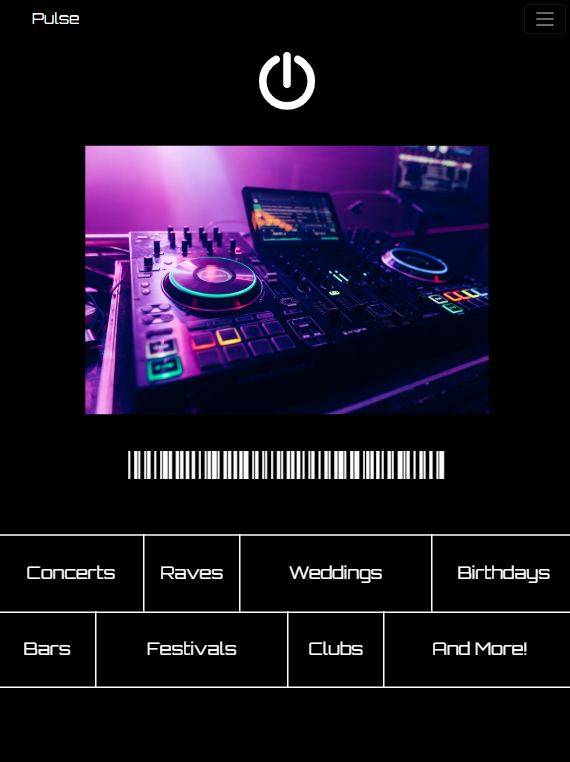
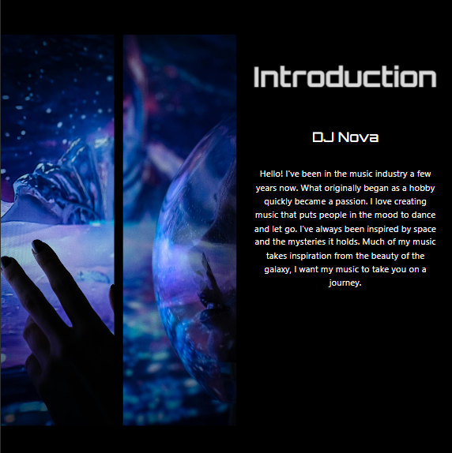

Pulse
DJ's Portfolio Branding
Dark, EDM inspired
CSS Grid
This website was another personal project I did with the goal to enhance my CSS/HTML skills. It was a static, one page site that I created to be a fake portfolio for a DJ. I was inspired by dark mode designs, pops of color, and the Orbitron font. I created the initial wireframe and had my finalized designs within hours of eachother. This was a very quick process in terms of kowing what I wanted for the design.
Because this is a portfolio I didn't create a logo, instead I used the font to be the main branding element for the DJ. I wanted the site to feel simple and get the main points across.


Learned:
- How to use the CSS Grid Style
- Visually Appealing Typography
- Embedding an Autoplay Video
- Scrolling Effects for User Engagement